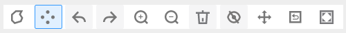
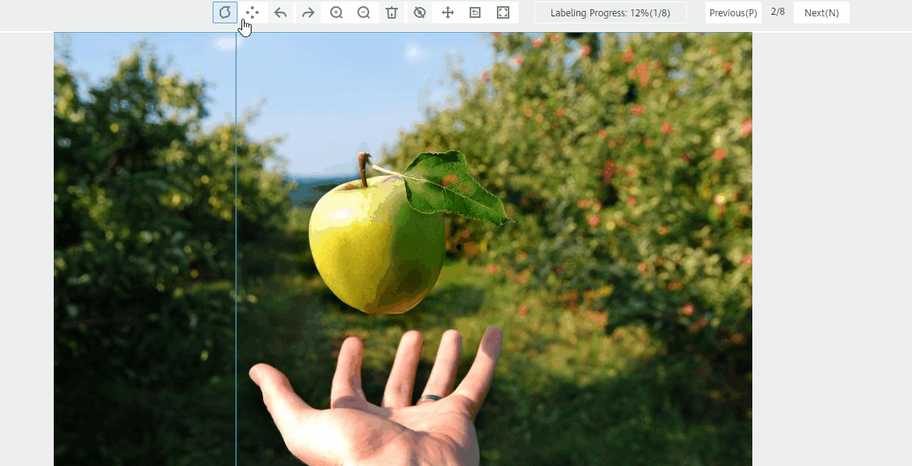
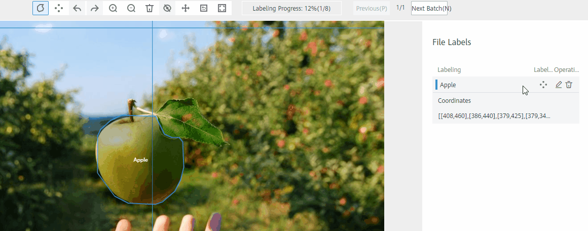
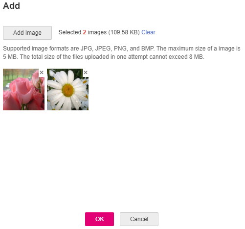

Training a model uses a large number of labeled images. Therefore, label images before the model training. You can label images on the ModelArts management console. Alternatively, modify labels, or delete them and label them again.
Before labeling an image in image segmentation scenarios, you need to understand the following:
- All objects whose contours need to be extracted from the image must be labeled.
- Polygons and points can be used for labeling.
- In polygon labeling, draw a polygon based on the outline of the target object.
- In point labeling, label the top, bottom, leftmost, and rightmost points on the object contour. The system will infer the outline of the object based on the labeled points. For images with complex backgrounds, it is a good practice to use polygons for labeling.
- When labeling an image, ensure that the polygons or points are within the image. Otherwise, an error will occur in subsequent operations.
Starting Labeling
- Log in to the ModelArts management console. In the left navigation pane, choose Data Management > Datasets. The Datasets page is displayed.
- In the dataset list, select the dataset to be labeled based on the labeling type, and click the dataset name to go to the Dashboard tab page of the dataset.
By default, the Dashboard tab page of the current dataset version is displayed. If you need to label the dataset of another version, click the Versions tab and then click Set to Current Version in the right pane. For details, see Managing Dataset Versions.
- On the Dashboard page of the dataset, click Label in the upper right corner. The dataset details page is displayed. By default, all data of the dataset is displayed on the dataset details page.
Synchronizing Data Sources
ModelArts automatically synchronizes data and labeling information from Input Dataset Path to the dataset details page.
- For an image classification dataset, the .txt file with the same name in the same directory as the data source is used as the label of the target image.
- For an object detection dataset or image segmentation dataset, the .xml file with the same name in the same directory is used as the label of the target image.
To quickly obtain the latest data in the OBS bucket, on the All or Unlabeled tab page of the dataset details page, click Synchronize Data Source to add data from OBS to the dataset.
Filtering Data
On the Dashboard tab page of the dataset, the summary of the dataset is displayed by default. In the upper right corner of the page, click Label. The dataset details page is displayed, showing all data in the dataset by default. On the All, Unlabeled, or Labeled tab page, you can add filter criteria in the filter criteria area to quickly filter the data you want to view.
The following filter criteria are supported. You can set one or more filter criteria.
- Label: Select All or one or more labels you specified.
- Sample Creation Time: Select Within 1 month, Within 1 day, or Custom to customize a time range.
- File Name or Path: Filter files by file name or file storage path.
- Labeled By: Select the name of the user who labeled the image.
Manually Labeling Images
The dataset details page provides the Labeled and Unlabeled tabs. The All tab page is displayed by default.
- On the Unlabeled tab page, click an image. The system automatically directs you to the page for labeling the image. For details about how to use common buttons on this page, see Table 2.
- Select a labeling method.On the labeling page, common labeling methods and buttons are provided in the toolbar. By default, polygon labeling is selected. Use polygon or point labeling as needed.

After you select a method to label the first image, the labeling method automatically applies to subsequent images.
Figure 1 Toolbar
Table 1 Labeling methods Icon
Description
Polygon labeling. In the area where the object to be labeled is located, click to label a point, move the mouse and click multiple points along the edge of the object, and then click the first point again. All the points form a polygon. In this way, the object to be labeled is within the bounding box.
Point labeling. Label the top, bottom, leftmost, and rightmost points on the object contour. The system will infer the outline of the object based on the labeled points.
Table 2 Toolbar buttons Icon
Description

Cancel the previous operation.

Redo the previous operation.

Zoom in an image.
Zoom out an image.
Delete all bounding boxes on the current image.
Display or hide a bounding box. This operation can be performed only on a labeled image.
Drag a bounding box to another position or drag the edge of the bounding box to resize it.

Reset a bounding box. After dragging a bounding box, you can click this button to quickly restore the bounding box to its original shape and position.

Display the labeled image in full screen.
- Label an object.
This section uses point labeling as an example. Identify an object in an image. Click to label the top, bottom, leftmost, and rightmost points on the object contour. In the dialog box that is displayed, set the label name and click Add. Then, the system automatically infers the object contour.
After labeling an image, click an image that has not been labeled in the image list below to label the new image.
Figure 2 Labeling an object outline
 - Click Back to Data Labeling Preview in the upper left part of the page to view the labeling information. In the dialog box that is displayed, click OK to save the labeling settings.
The selected image is automatically moved to the Labeled tab page. On the Unlabeled and All tab pages, the labeling information is updated along with the labeling process, including the added label names and the number of images for each label.
Viewing Labeled Images
On the dataset details page, click the Labeled tab to view the list of labeled images. Click an image to view its labeling information in the File Labels area on the right.
Modifying a Label
After labeling an object, you can modify labeled data on the Labeled tab page.
On the dataset details page, click the Labeled tab and then the image to be modified. On the labeling page that is displayed, modify the labeling information in the File Labels area on the right.
- Modifying a label: In the Labeling area, click the edit icon, set the target label name or color in the displayed dialog box, and click the save icon to save the modification. Alternatively, click a label to be modified. In the image labeling area, adjust the position and size of the bounding box. After the adjustment is complete, click another label to save the modification.
- Modifying image labeling information: In the area for displaying images, click the target bounding box. Then, blue points on the bounding box are displayed. Drag a blue point and adjust the bounding box to the edge of the object.
- Deleting a label: In the Labeling area, click the deletion icon to delete a label from the image. After all labels of an image are deleted, the image is displayed on the Unlabeled tab page.

Adding Images
In addition to automatically synchronizing data from Input Dataset Path, you can directly add images on ModelArts for data labeling.
- On the dataset details page, click the All or Unlabeled tab. Then click Add.
- On the Add page that is displayed, click Add Image.
Select one or more images to be uploaded in the local environment. Images in JPG, JPEG, PNG, and BMP formats are supported. The size of a single image cannot exceed 5 MB, and the total size of all images uploaded at a time cannot exceed 8 MB.
After the images are selected, their thumbnails and sizes are displayed on the Add page.
Figure 4 Adding images
 - On the Add page, click OK.
The images you have added will be automatically displayed in the image list on the Unlabeled tab page. In addition, the images are automatically saved to the OBS directory specified by Input Dataset Path.
Deleting Images
You can quickly delete the images you want to discard.
On the All, Unlabeled, or Labeled tab page, select the images to be deleted or click Select Images on Current Page to select all images on the page, and click Delete in the upper left corner to delete the images. In the displayed dialog box, select or deselect Delete source files as required. After confirmation, click OK to delete the images.
If a tick is displayed in the upper left corner of an image, the image is selected. If no image is selected on the page, the Delete button is unavailable.
If you select Delete source files, images stored in the corresponding OBS directory will be deleted when you delete the selected images. Deleting source files may affect other dataset versions or datasets using those files. As a result, the page display, training, or inference is abnormal. Deleted data cannot be recovered. Exercise caution when performing this operation.